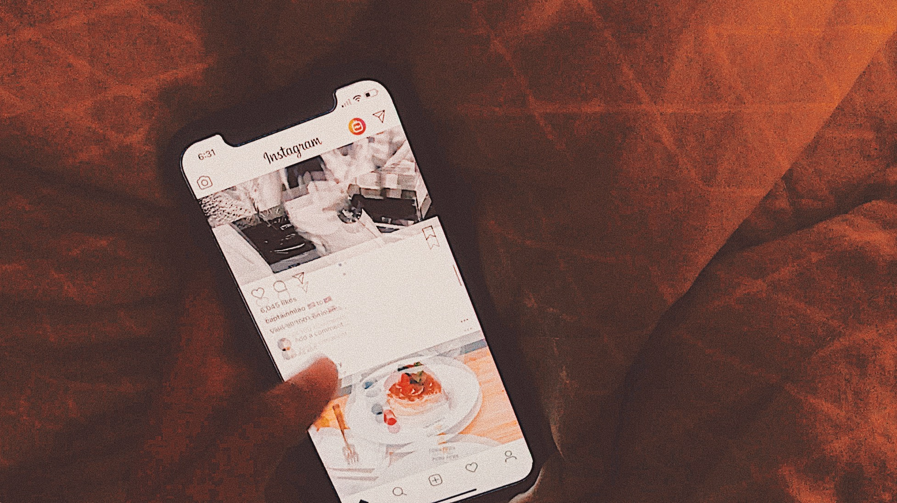

PUT YOUR CELLPHONE DOWN
This video is made as a cultural critique to reveal that how technology impact human's life by showing people are on their cellphone in different kinds of occasion: shopping mall, restuarant, library, even in the car.

SEE
The idea of this video is to give the eyes a "filter" to let people see what they could not see in their normal life. My installation is showing three different vision of what visual impairment people see and what regular vision people see in the same view : Standard eyesight viewing, short sighted viewing and color blindness viewing.